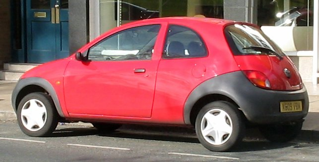

Acervo Fotográfico de Referência
Perspectivas Reais do Ka 1998
Fotografias originais de preservação histórica exibindo os ângulos canônicos do modelo de produção.



Claude Lobo & Ghia Design
O pioneiro absoluto da filosofia estética New Edge da Ford. Com proporções icônicas de cidade, rodas nos quatro cantos, teto em arco e para-choques envolventes em cinza grafite, o Ford Ka de primeira geração quebrou todas as regras de design automotivo em Vermelho Colorado.
Estúdio 3D Interativo WebGL
Modelo procedural com proporções fiéis ao Ford Ka Mk1 (3,62m de comprimento, entre-eixos estendido e para-choques curvos envolventes). Gire livremente e inspecione todos os ângulos.
Engenharia & Dimensões
Desenvolvido com o objetivo de oferecer a máxima agilidade urbana, o Ford Ka 1998 posicionou as quatro rodas nas extremidades absolutas da carroceria. O resultado foi um comportamento dinâmico que a imprensa internacional elogiou como 'sensação direta de kart'.
Os para-choques dianteiro e traseiro em três peças de polímero texturizado cinza escuro foram concebidos para resistir a impactos em manobras de estacionamento sem necessidade de pintura cara, mantendo os custos de manutenção imbatíveis.
Web Audio API Sintetizador
O lendário motor Endura-E pushrod (OHV de comando no bloco acionado por corrente e balancins mecânicos) produz um timbre inconfundível. Clique no botão de partida abaixo para iniciar os 4 cilindros em marcha-lenta e utilize o pedal virtual para acelerar até a faixa de torque.
Acervo Fotográfico de Referência
Fotografias originais de preservação histórica exibindo os ângulos canônicos do modelo de produção.
História do Design Automotivo
Em 1994, no prestigiado Salão de Turim, a Ford apresentou o carro-conceito Ghia Saetta, desenhado pelo visionário designer Claude Lobo e supervisionado por Jack Telnack. Foi a certidão de nascimento do movimento New Edge: superfícies tensas e curvas que se interceptavam em arestas vivas.
Em 1996 o modelo chegou às ruas européias com o nome Ka (inspirado na mitologia egípcia para a 'força vital da alma humana'). No Brasil, sua estreia em 1997 transformou a paisagem urbana com um estilo arrojado que permanece inconfundível.
Apresentação do conceito Ghia Saetta em Turim, definindo as bases aerodinâmicas e estéticas do Ka.
Início da produção em Valência, Espanha. O Ka revoluciona o segmento de carros urbanos com elogios unânimes pelo dinamismo de chassi.
Fabricado em São Bernardo do Campo (SP), torna-se referência instantânea de modernidade com o motor Endura-E 1.0 e 1.3.
Consolidação do tom Vermelho Colorado como a cor mais icônica do modelo, combinando de forma perfeita com os para-choques escuros New Edge.
Após 12 anos e milhões de unidades vendidas em todo o mundo, a primeira geração torna-se um dos clássicos colecionáveis mais carismáticos da história da Ford.
Contato para Colecionadores
Interessado na aquisição, restauração ou catálogo histórico do Ford Ka 1998 Mk1? Deixe suas informações para receber material exclusivo da linhagem New Edge.